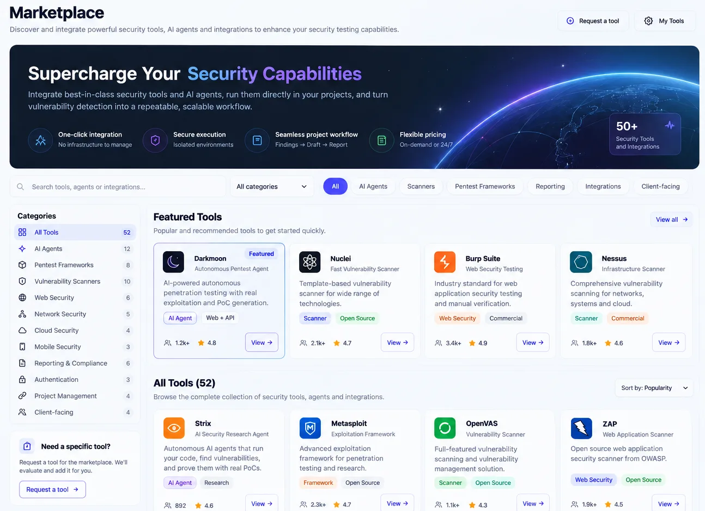
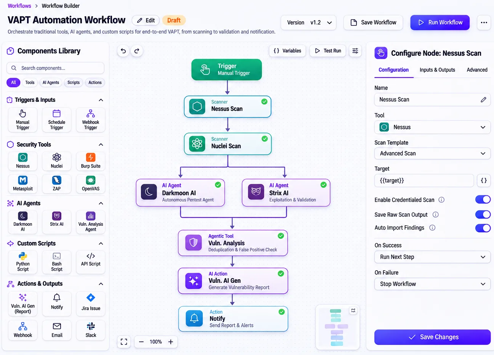
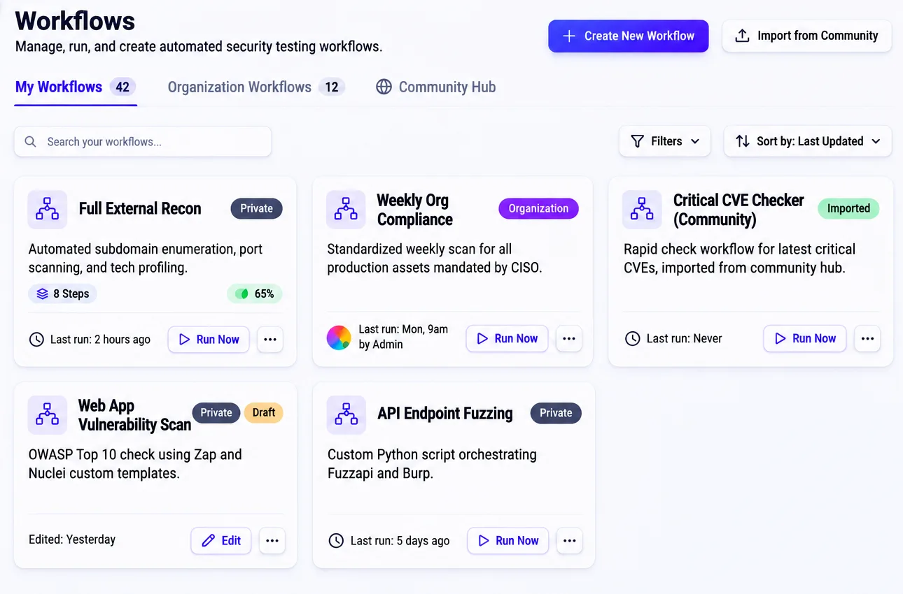
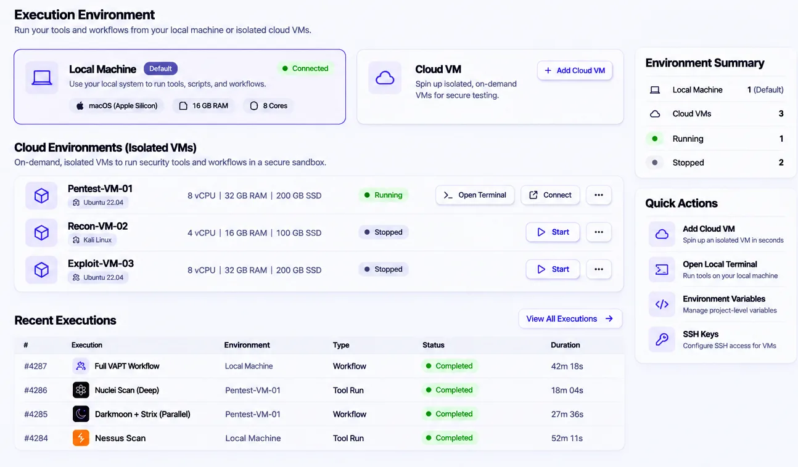
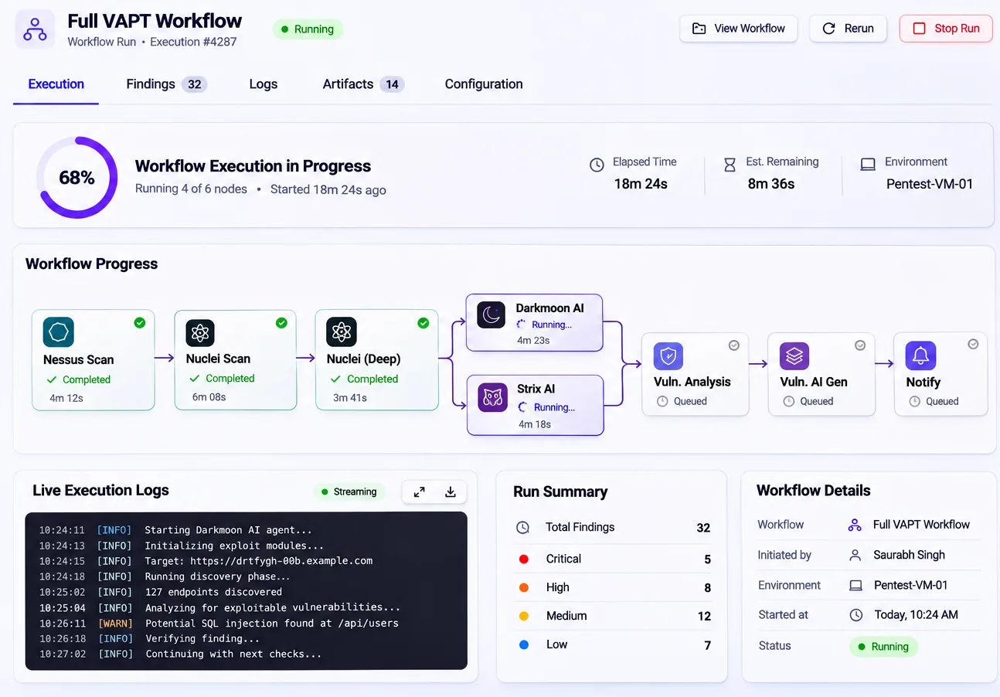
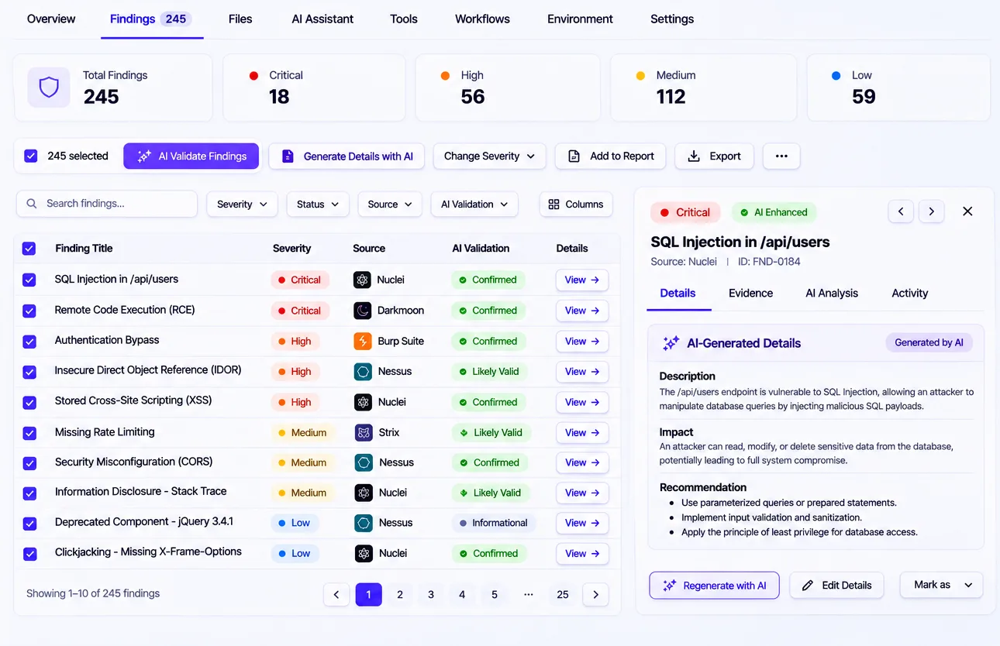

How much has shipped since your last pentest?
Deep testing happens a few times a year. Releases happen every week.
Your engineers release every week. Radar 36 lets your own security team test at that pace, with full control over what runs and where.
Deep testing happens a few times a year. Releases happen every week.
Agents and scripts run from individual laptops, with no isolation and no record.
The evidence sits in terminals, PDFs and chat threads until someone collects it.
Every scanner and vendor reports separately, so the same issue is triaged twice.
Continuous security testing, run by your team, under your control. One self-hosted workspace where your tools, scripts and AI agents run in isolated sandboxes, and every run is on the record.
Your team sets the standard. Radar 36 runs it, every time.
The tools you already pay for get orchestrated, not replaced.

A small team covers more applications, more often.

Your testing policy becomes something that runs, not a document.

Adopt AI testing agents without losing sight of where they run.

Audit evidence becomes a by-product, not a project.

Developers get validated issues with a fix, not raw scanner output.

What was tested, when and with what result, without a scramble before each audit.
Routine testing runs itself, so experts spend their hours where judgment is needed.
Validated findings with a suggested fix, while the code is still fresh.
Security stops being the team that slows releases down.
A working session on your tools, scripts and how you test today.
Your team runs it on Radar 36 in your environment, with our team alongside.
Review coverage and findings, then add applications at your own pace.
Self-hosted, in your own environment.
Which application would you most like tested every week?